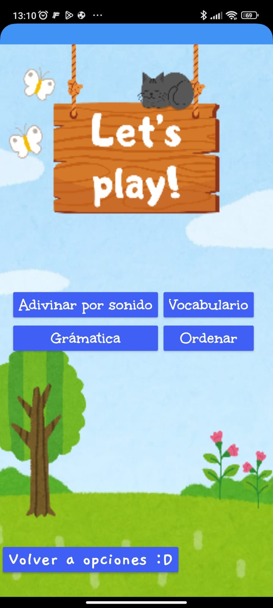

>Menú principal: fácil, claro y pensado para niños
El menú de nuestra app es muy sencillo e intuitivo, ideal para que los niños de 7 a 10 años puedan moverse por la aplicación sin dificultad.
Con solo unos Ãconos y palabras simples, pueden acceder rápidamente a:
ğŸ Inicio: La pantalla principal donde comienza la aventura.
💖 Introducción: Un espacio donde se resume el propósito que tiene está aplicación.
💬 Comentarios: Un espacio donde los niños (o padres) pueden dejar sus opiniones mediante un correo electrónico.
>Un menú divertido para elegir cómo aprender
En esta pantalla, los niños podrán decidir cómo quieren aprender hoy, eligiendo entre cuatro opciones llenas de color y aprendizaje:
🮠Juegos: Actividades interactivas para aprender jugando.
📺 Videos: Contenido audiovisual adaptado a su edad para reforzar el idioma de forma entretenida.
📖 Historias para leer: Cuentos cortos con vocabulario básico para practicar la lectura.
Además, con solo un toque, pueden volver al inicio fácilmente.
Este diseño está pensado para que los niños se sientan libres, motivados y seguros al aprender, ¡como si estuvieran eligiendo su aventura del dÃa!

>Let’s Play! – ¡Aprender nunca fue tan divertido!
Y si desean volver a explorar otras opciones, ¡solo deben tocar el botón "Volver a opciones :D"!
Cada juego está diseñado para ser intuitivo, corto y con refuerzos positivos, ¡perfecto para mantener la atención y el entusiasmo de los pequeños!
>Videos para aprender - ¡Aprender visualmente siempre es la mejor opción para los más pequeños!
En está pantalla, los niños podrán visualizar videos online en el que aprenderán de manera fácil y divertida. Se encuentran dos videos interactivos
los cuales son: